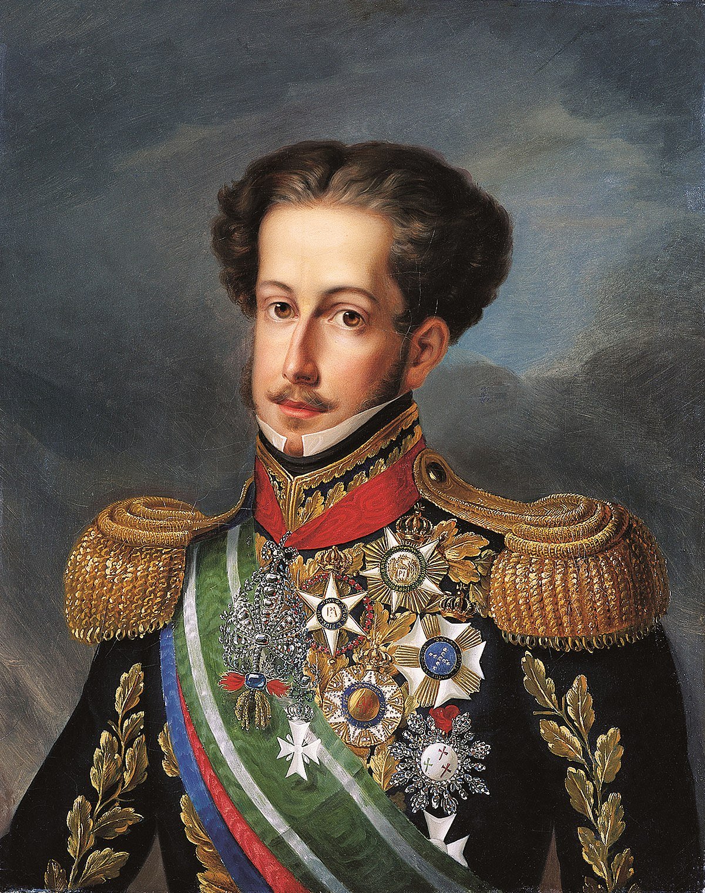

Por Pedro Eurico Rodrigues
Audio:
Pedro de Alcântara Francisco António João Carlos Xavier de Paula Miguel Rafael Joaquim José Gonzaga Pascoal Cipriano Serafim é o nome completo de Dom Pedro I, nascido em 1798 no Palácio Real de Queluz, em Portugal, mesmo lugar onde faleceu em 1834 após abdicar o trono no Brasil.
Foi o quarto filho do Rei D. João VI de Portugal e de Carlota Joaquina da Espanha e, portanto, teve sua infância conturbada por conta do casamento conflituoso de seus pais, que viviam em diferentes palácios. Dessa forma, sua educação não foi grande preocupação da família, o que não justifica as ideias comuns que o retratam como ignorante e pouco atento aos estudos.
Em 1807 as tropas francesas invadem Portugal fazendo com que a família real se mudasse para a colônia. O Rio de Janeiro passou a ser o local de moradia e D. Pedro I, ainda infante, passa a viver no Brasil, na Quinta da Boa Vista.
Casou-se com Maria Leopoldina da Áustria em 1817, com quem teve sete filhos: D. Maria, D. Miguel, D. João Carlos, D. Januária, D. Paula, D. Francisca e D. Pedro. Mas, seus casos extraconjugais também ficaram famosos, sendo o mais emblemático deles o caso que manteve durante anos com Domitila de Castro, a Marquesa de Santos. O encontro com a Marquesa foi repleto de amor, joias e influência, que podem ser atestados pelas correspondências trocadas entre os amantes. Domitila foi uma figura tão importante ao lado do Imperador que hoje sua residência situada na cidade de São Paulo, o Solar da Marquesa de Santos, é aberto a visitações.
Foi Pedro I que em 07 de setembro de 1822 declarou a Independência do Brasil, sendo seu primeiro imperador, até sua abdicação para Pedro II em 1831.
Por duas vezes D. Pedro I abdicou o poder em nome dos filhos. Num primeiro momento, em 1826, para Maria da Glória tornar-se Rainha de Portugal e em 1831 para que D. Pedro II ser o segundo imperador brasileiro.
Um traço marcante da biografia de D. Pedro I é sua capacidade de criar relações profundas tanto com Portugal como com o Brasil. Marca disto são os seus restos mortais que estão localizados tanto em Portugal, onde está seu coração em relicário na Igreja de Nossa Senhora da Lapa desde 1835, como no Brasil, que desde 1972, após um acordo diplomático entre Brasil e Portugal, salvaguarda seus restos mortais no Monumento do Ipiranga na cidade de São Paulo.
Amante da música e das artes, seus gostos foram incentivados pela Imperatriz Leopoldina, uma mulher culta e estudiosa, que recebeu boa educação formal e que compartilhava seus saberes com o marido. Pedro I tocava instrumentos, cantava e compunha, e foi o autor do Hino da Independência. O casamento com Leopoldina foi fundamental para o enriquecimento cultural de Pedro I.
Considerado por vezes violento e autoritário, até mesmo com a esposa, mantendo relações extraconjugais, Pedro I foi um imperador enérgico e impaciente e um ávido escritor: escreveu em forma de pseudônimos a jornais, escreveu muitas cartas ás amantes e aos filhos. Enfim, uma figura controversa.
Referências:
http://www.revistadehistoria.com.br/
http://www.museudacidade.sp.gov.br/solardamarquesadesantos.php